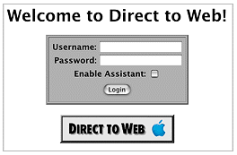
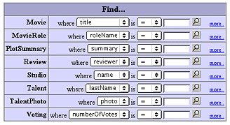
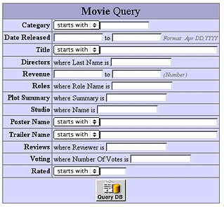
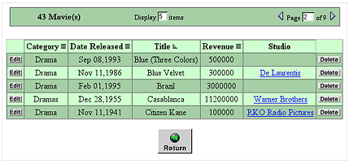
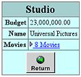
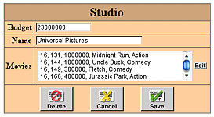
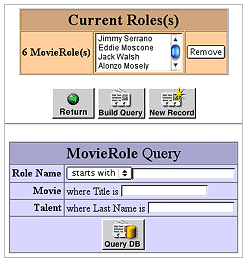
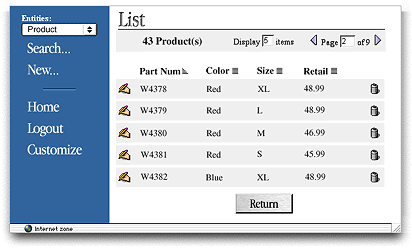
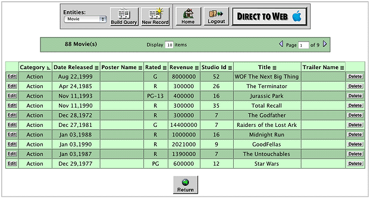

| PATH |

Direct to Web is a technology that creates HTML-based Web applications that use enterprise objects and consequently access databases. All you need to provide is the model that specifies the database-to-objects mapping and Direct to Web instantly creates an application.
Direct to Web applications have a particular structure. Every Direct to Web application begins on a login page ( Figure 5-1). By default, this page provides an interface to authenticate the user but does not actually perform any authentication. Because the login page is a standard WebObjects component, you can change its behavior.
Figure 5-1 A login page
After the user logs in, Direct to Web displays its first dynamically generated page: a query-all page ( Figure 5-2). This page allows the user to specify the enterprise objects he or she wants to work with. The user can query for any type of enterprise object that is visible in the application (the developer decides which types are visible and which are not).
Figure 5-2 A query-all page
If the query-all page is not specific enough, the user can click one of the hyperlinks labeled "more..", which brings up a query page specific to the corresponding type of enterprise object ( Figure 5-3). In this page, the user can specify the values for several properties at the same time. The resulting query is the logical "and" of the individual queries for the properties.
Figure 5-3 A query page
When the user clicks the Query button on the query page or the magnifying glass icon on the query-all page, Direct to Web displays the enterprise objects matching the query on a list page ( Figure 5-4). This page presents the enterprise objects in batches; the user can change the batch size and navigate from batch to batch.
Figure 5-4 A list page
Note that each Movie enterprise object on the list page in Figure 5-4 has an Edit button, which indicates that Movie objects are read-write. The developer can configure whether a type of enterprise object is read-only or read-write.
If the Movie objects are read-only, an Inspect button appears on each row instead of an Edit button. If the user clicks the Inspect button next to one of the enterprise objects, Direct to Web displays an inspect page for the object ( Figure 5-5) that reveals more detailed information about the object.
Figure 5-5 An inspect page
If the objects displayed on the list page are writable and the user clicks the Edit button next to one of them, Direct to Web displays an edit page for the object ( Figure 5-6). On the edit page, the user can edit the attributes for the object or click the Edit button next to one of the relationships to edit the relationship.
Figure 5-6 An edit page
The user edits a relationship using an edit-relationship page ( Figure 5-7), which edits to-many and to-one relationships.
Figure 5-7 An edit relationship page
With the exception of the login page, every Direct to Web page has an area containing a menu and buttons that assist in navigating around the application ( Figure 5-8). This is called the menu header.
Figure 5-8 The menu header
Every Direct to Web application appears in one of three looks. A look is a visual theme, and affects the layout and appearance of the pages. The example pages you have seen are in the Basic look. Direct to Web also supports two other looks: the Neutral look ( Figure 5-9) and the WebObjects look ( Figure 5-10).
Figure 5-9 An example Neutral look page
Figure 5-10 An example Basic look page
